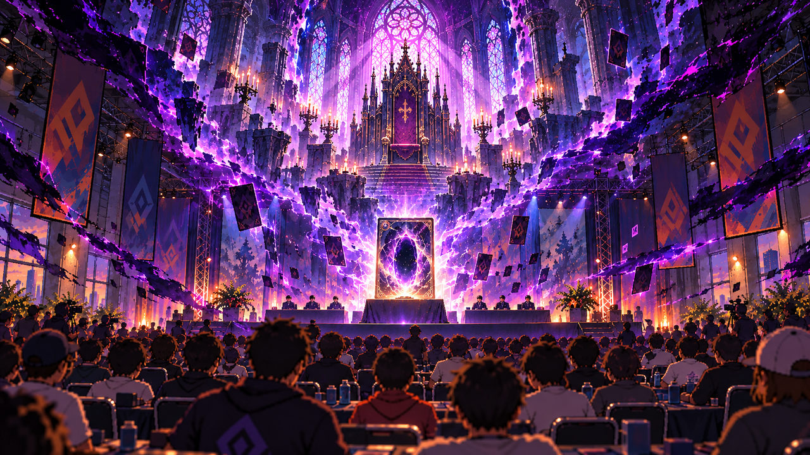
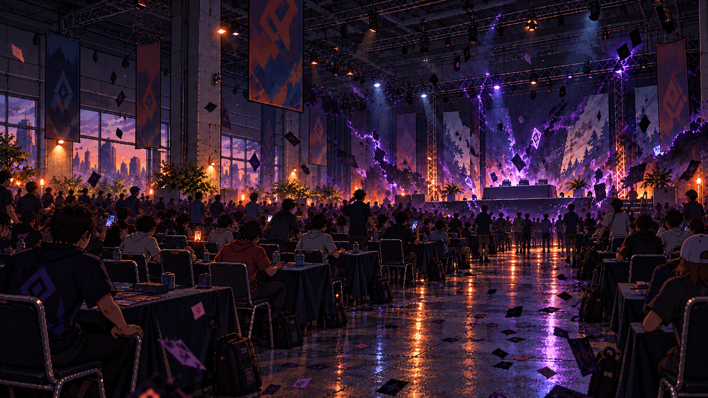
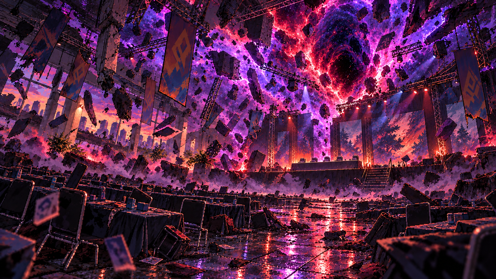
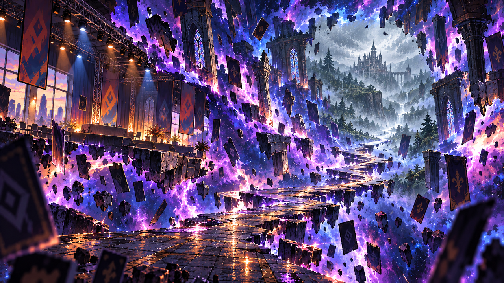

Candidatos — validación técnica, no aprobación artística
Visión del trono — pendiente por guion y mapeo protegido
pendiente / Sin asignación narrativa

None
Inicio del apagón en el salón del torneo
listo /

['prologo.transporte.0']
Ruptura extrema — alternativa no integrada
pendiente / Sin asignación narrativa

None
Tránsito dimensional — alternativa no integrada
pendiente / Sin asignación narrativa

None